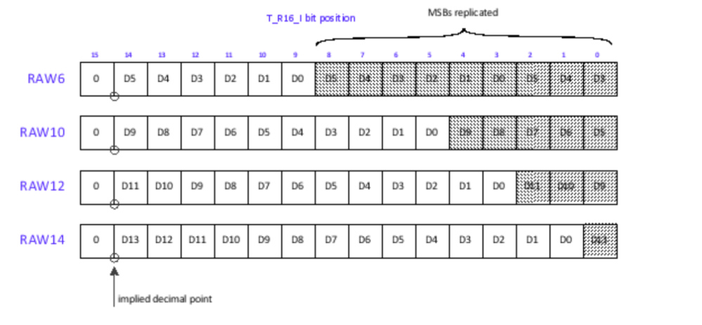

faster open-isp
整个ISP处理过程可能包含的步骤 1
2
3
4
5
6
7
8
9
10
11
12
13
14
15
16
17dpc: True
blc: True
aaf: True
awb: True
cnf: True
cfa: True
ccm: True
gac: True
csc: True
nlm: False
bnf: False
ceh: False
eeh: False
fcs: False
hsc: False
bcc: False
scl: False
ccm->csc 是RGB域，csc就是将rgb转为yuv格式，所以要也可以去掉
nlm->scl 是yuv域，即后面都是针对yuv做相应的调色
最后的输出，如果有yuv域的数据，就会把yuv转成rgb，再返回。如果没有进行过yuv域的操作，就直接返回rgb域的rgb数据。同时会把数据scale到0-255，就是一个线性的放缩:
\[\begin{equation}x_1=x/\max*255
\end{equation}\]
ISP tuning，如何将得到的rgb效果调好
opencv+PIL
PIL使用
PIL.Image保存单通道图像，可以将raw->png，方便查看，只有int8才能保存为jpg，其他深度需要用png 1
2
3
4
5f = open('image.raw', 'rb')
rawdata = np.fromfile(f, dtype=np.uint16, count=1080 * 1920)
rawdata = rawdata.reshape(1080,1920)
im = Image.fromarray(rawdata)
im.save("rawdata12.png")1
2
3
4
5
6f = open('image.raw', 'rb')
rawdata = np.fromfile(f, dtype=np.uint16, count=1080 * 1920)
rawdata = rawdata.reshape(1080,1920)
resized_raw = cv2.resize(rawdata,(320, 256),0,0,cv2.INTER_AREA)
im = Image.fromarray(resized_raw)
im.save("rawdata_resized.png")
opencv将bayer转为rgb
1 | f = open('image.raw', 'rb') |
其中参数cv2.COLOR_BAYER_RG2BGR可以根据bayer的格式和要转换的格式就行修改，见参考
bayer位数转化
10bit bayer转8bit bayer
就是\(x*255/1024 = x/4\)，参考论坛
转化遇到的问题
获得的bayer数据大于1024，这是由于格式jetson nx上的raw data的存储格式造成的，参考。  根据图片中的格式，则16bit存储的raw10最右边5位是重复无效的，最左边一位也是无效，看中间的十位。因此直接将数据向右移动5位就是真实的数据，如果要转为8bit，就再移动两位，即除4。 应该不同的平台的这种格式不同，不是统一的填充方式。 1
2
3
4
5
6
7
8
9
10
11
12
13
14
15(py3.8) tangpeng@ubuntu:~/ISPExperiment$ v4l2-ctl --list-formats-ext
ioctl: VIDIOC_ENUM_FMT
Type: Video Capture
[0]: 'RG10' (10-bit Bayer RGRG/GBGB)
Size: Discrete 3280x2464
Interval: Discrete 0.048s (21.000 fps)
Size: Discrete 3280x1848
Interval: Discrete 0.036s (28.000 fps)
Size: Discrete 1920x1080
Interval: Discrete 0.033s (30.000 fps)
Size: Discrete 1640x1232
Interval: Discrete 0.033s (30.000 fps)
Size: Discrete 1280x720
Interval: Discrete 0.017s (60.000 fps)
fastvideo
https://github.com/fastvideo/gpu-camera-sample https://www.fastcompression.com/products/sdk.htm
VPI
PVA VIC
may debayering use vpi
https://docs.nvidia.com/vpi/group__VPI__ColorSpec.html#ga3992fdce156a7a194f8cda65571eefd5